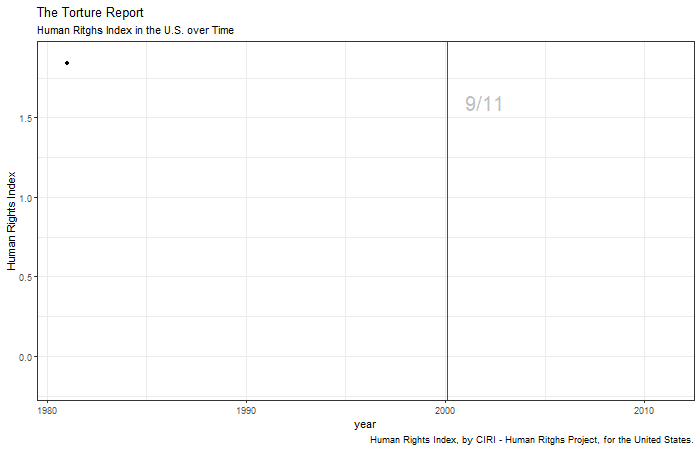
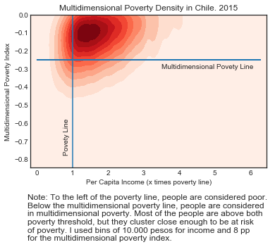
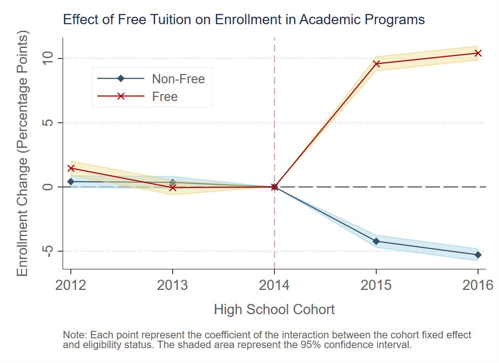

Open Source Datasets
Some of the datasets I really find interesting:
World
Varieties of Democracy: This dataset has country-by-year information with different democracy indices and disagregated data on minority representation, the rule of law, labor rights, voting rights, civil liberties and other dimesnions of democracy.
World Inequality Database: Country-by-year dataset with information about wealth and income inequality. If you are a Stata user, you can access the data directly from Stata by installing wid command: ssc install wid .
World Bank: This is a rich dataset with several indicators on education, health, labor and poverty by country. It also has the Doing Business indicator and the Millenium Development Goal. You can access aggregate data by country or microdata for each specific country (when available).
Our World in Data. COVID-19 Dataset: Daily updated dataset with country level information on COVID-19 cases, deaths and tests. It also includes demographic information for each country.
Human Freedom Index: Starting in 2008, The Human Freedon Index dataset has information on on personal, civil, and economic freedom.
Chile (Spanish)
Department of Education Open Data: These are administrative records on
students' performance, admission, and attendance at different education levels, from pre-K to higher education, since the early 2000's.
It also has information on schools and teachers. These are very complete and clean datasets.
They have separete datasets for each year, but merging them is very straightforward. I have a complete dataset where I merged most of the information, I am
happy to share it with anyone who ask!
Unemployment Insurance, Chile: Sample of up to 12% of workers in the Unemployment Insurance records. These are monthly observations with personal, income, employment, and occupation characteristics.
Data Visualization Resources
I am not an expert in data visualization, but, lucky me, there are tons of information publicly available. Here are some of the resources I find useful and/or cool.
What the graph
After figuring out how I want my graph to look like, I usually start by searching the name of the graph I need (or the closest one). Dataviz Project has a neat catalog of different types of graphs. And it has cool examples too.
PolicyViz also has nice examples of data visualization from different sources. Definitely something to check if you are not sure how to present your results or need some inspiration. They also have a podcast!
How to do it
Once I have the name of the graph, I always have to check how to do it in R, Python, or Stata. For this purpose, the R graph gallery is always a good place to start. Rob Kabacoff has an open-access Data Visualization with R book that is simple and intuitive. Very helpful. The Python Graph Gallery is a good place to look if you prefer Python. Finally, Plotly also has a nice catalog of graphs for Python, R, and JavaScript.
Data Visualization on Random Topics
Human Rights
Human Rights and GDP
There is a correlation between how rich a country is and how much it respects human rights. But the dynamics suggest that, for most countries, getting richer didn't imply a higher compliance of human rights.
Human Rights in the US
Many times, basic human rights are sacrificed for the sake of safety.
Poverty
More than Meets the Eye
In 2019, Chile experienced several social protests demanding a better quality of life (among other things).
While many experts and politicians argued these protests were unfounded because the inequality level and the poverty rate were historically low,
more and more people joined the movement and raised their voices in complaint. Let this help us remember that any measure we use will be necessarily incomplete.
This graph shows the density of families in Chile along two dimensions: income and a multidimensional poverty index. This index uses 12 different
indicators grouped in 4 dimensions: labor, education, housing, and health.
Although the poverty rate was low, many families were just above the poverty line and lacking in at
least two of these indicators. In other words, they were highly vulnerable. This didn't appear in the official measures.

Education
Average Wage at Different Age, by Type of Education
Wage differentials keep increasing until age 40. At which point we compare returns to each type of education, is therefore important.
Effect of a Free-Tuition Policy in Chile
In 2016, Chile implemented a free-tuition policy for the poorest 50% of the population. This graph shows the enrollment change of eligible students, relative to non-eligible students, before and after the policy. The first high school cohort to benefit from this policy was 2015. Eligible students were around 10 percentage points more likely to enroll in an academic program in a free institution, and around 50% of them would have enrolled in an academic program in a non-free institutions.
These point estimates and confidence intervals come from a difference-in-difference estimation with a correction for sample selection. This is one of the main graphs in my job market paper
Poverty and Access to Higher Education in Chile
The proportion of poor students in a school is highly related to the quality of the program students attend in college.
In the left column, I ranked high schools according to the proportion of poor students in the school. Lower deciles mean poorer schools.
In the right column, I ranked programs according to the average PSU (college admission test) in the program. Lower deciles mean lower average scores.
Students in the poorest 10% schools are less likley to enroll in college, and if they do, they usually enroll in lower-ranked programs.